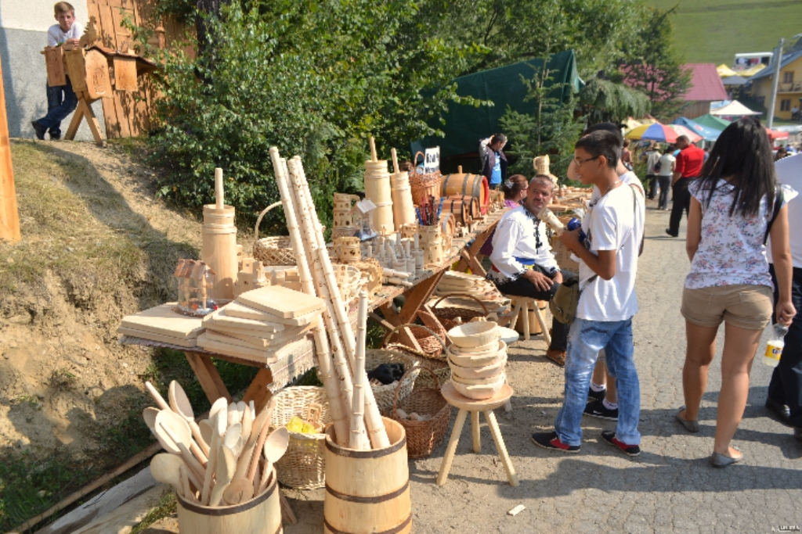
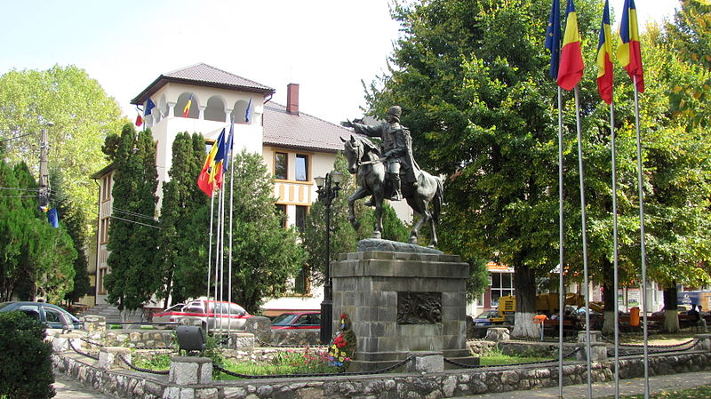
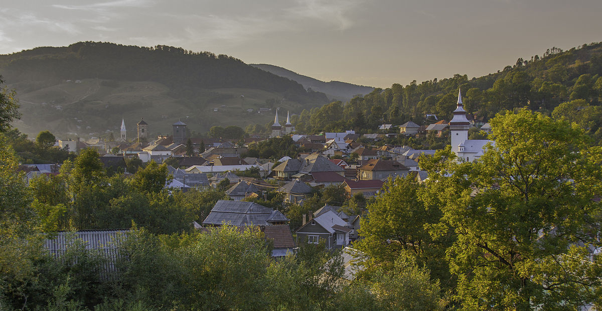
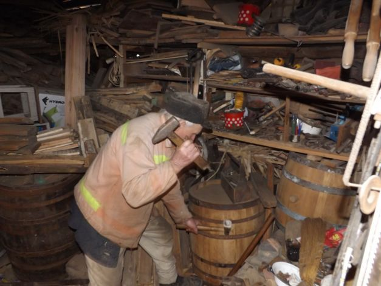
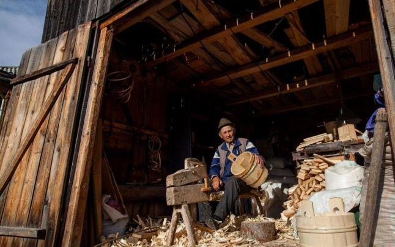

Tara Motilor
Situată în Munții Apuseni, pe bazinul superior ale râurilor Arieș și Crișul Alb. Cuprinde porțiuni din actualele județe Alba, Arad, Bihor, Cluj și Hunedoara. O porțiune din regiune este parte a Parcului Natural Apuseni. Țara Moților începe tradițional la Bistra, înainte de Câmpeni, numit mai demult Topani de către moți sau Topfesdorf de către austrieci, considerată tradițional capitala moților, iar satele de pe râul Arieș, spre Turda (Lupșa, Sălciua etc.) sunt locuite de mocani.
Intreaga populatie este de nationalitate romana. Oamenii sunt robusti, de statura mijlocie, in majoritatea cu parul blond.Ocupatia lor principala este munca la padure si prelucrarea lemnului (dulgheri care fac constructii din lemn –case, biserici plus cei care fac vase din lemn –ciubere, donite, tulnice).Tulnicul reprezinta mijlocul de comunicare a satenilor.
Asezari
Câmpeni (în maghiară Topánfalva, în germană Topesdorf) este un oraș în județul Alba, Transilvania, România, format din localitățile componente Boncești, Borlești, Botești, Câmpeni (reședința), Certege, Coasta Vâscului, Dănduț, Dealu Bistrii, Dealu Capsei, Dric, Fața Abrudului, Florești, Furduiești, Mihoești, Motorăști, Peste Valea Bistrii, Poduri, Sorlița, Tomușești, Valea Bistrii, Valea Caselor și Vârși. Localitatea este cunoscută nu numai pentru frumusețea peisajului, dar și pentru personalitățile care au marcat istoria românilor, ca Horea, Cloșca și Crișan, conducătorii răscoalei de la 1784, și Avram Iancu, cel care a adus o contribuție însemnată în cadrul Revoluției de la 1848. Pe Harta Iosefină a Transilvaniei din 1769-1773, localitatea apare sub numele de „Topanfálva”. La cca 0,5 km spre est de Câmpeni pe hartă este indicat un loc al căutătorilor de aur cu șaitrocul din aluviunile Arieșului („Gold Wäscherei”). De-alungul unei văi afluente pe dreapta a Arieșului din apropiere sunt marcate numeroase șteampuri pentru prelucrarea minereurilor bogate în aur („Stampf Mühlen”).
Orașul Abrud este situat în depresiunea Abrudului, un spațiu dominat de un relief vălurit, modelat la contactul dintre Muntele Găina și Munții Metaliferi, în estul a ceea ce se numește Țara Moților. Înspre nord, Abrudul este străjuit de Dealul Băieșilor (872 m), Dealul Hebatului (902 m) și Dealul Orzena (868 m), iar înspre sud de Dealul Ciuta (899 m) și Vârful Stiurt (941 m). În est, se înalță Vârful Citera (830 m), Piatra Rară (880 m) și Dealul Lazărului (817 m).
Ocupatii
Prelucrarea lemnului și mineritul sunt ocupațiile de bază din Țara Moților, iar pădurile de stejar, fag și pin furnizează materialul necesar pentru faimoasele butoaie, mobilierul și alte obiecte artizanale realizate în regiune.Se practică creșterea animalelor, în special a vacilor și oilor. Sunt cultivați în cantități mici cartofii și orzul.
 